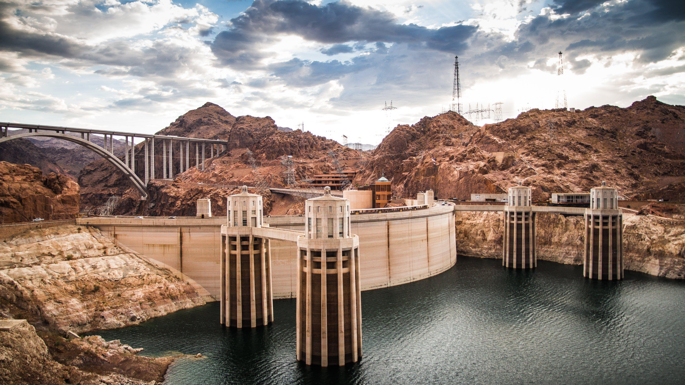

Hoover Dam

Description of Hoover Dam:
Hoover Dam, formerly called Boulder Dam, dam in Black Canyon on the Colorado River, at the
Arizona-Nevada border, U.S. Constructed between 1930 and 1936, it is the highest concrete arch dam in
the
United States. It impounds Lake Mead, which extends for 115 miles (185 km) upstream and is one of the
largest artificial lakes in the world. The dam is used for flood and silt control, hydroelectric power,
agricultural irrigation, and domestic water supply. It is also a major sightseeing destination, with
some
seven million visitors a year, almost one million of whom go on tours through the dam.
Hoover Dam is 726 feet (221 metres) high and 1,244 feet (379 metres) long at the crest. It contains
4,400,000 cubic yards (3,360,000 cubic metres) of concrete. Four reinforced-concrete intake towers
located
above the dam divert water from the reservoir into huge steel pipes called penstocks. The water, after
falling some 500 feet (150 metres) through the pipes to a hydroelectric power plant in the base of the
dam,
turns 17 Francis-type vertical hydraulic turbines, which rotate a series of electric generators that
have a
total power capacity of 2,080 megawatts. Nearly half of the generated electric power goes to the
Metropolitan Water District of Southern California, the city of Los Angeles, and other destinations in
southern California; the rest goes to Nevada and Arizona. The dam, power plant, and reservoir are owned
and
managed by the U.S. Department of the Interior’s Bureau of Reclamation.

{kind=link}
{kind=link}